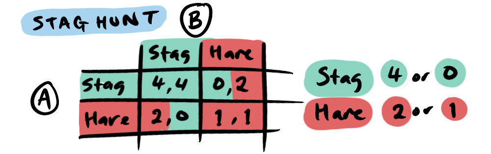

We've all attempted to collaborate with a friend on some herculean master-plan—like building an origami cottage or convening an international squad of superheroes to defeat the forces of tyranny—and worried "Are they going to show up, or will they bail?”. We know we've both got other easier tasks to tick off. This concern is central to our present subject. Whether you're a trigger-happy hunter or a virtuous vegan, one of the most applicable scenarios in game theory is the Stag Hunt.
Two hunters can cooperate to catch a stag (a difficult but highly rewarding prize) or each can safely hunt a hare (a lower-value but guaranteed meal).
If both hunt stag, they share a big payoff (4 points each) and if both hunt hare, each only gets a modest reward (1). But if one hunts stag while the other hunts hare, the stag-hunter goes home empty-handed (0) while the hare-hunter gets 2.
Notice there are two stable equilibria (both hunt stag or both hunt hare), which is why we call the Stag Hunt a coordination game—where your best choice depends on the other person’s decision. If you trust your partner to go for the stag, you’ll do the same. But if you suspect they’ll play it safe, you might also settle for hare. This interdependence on trust is the hallmark of coordination.
Sounds similar, right? We have two players who both benefit from cooperating but are safer defecting...
Well, not exactly, there are some fundamental differences:
- In the Prisoner’s Dilemma, (defect, defect) is the only Nash equilibrium because cooperating always pays less than defecting. In contrast, the Stag Hunt has a cooperative win that far exceeds the payoff for defecting, resulting in two stable equilibria.
- Communication can profoundly change the Stag Hunt outcome. In everyday life, transparent communication—from official treaties to group text messages—can break the cycle of mistrust and push everyone toward the higher-payoff option.
- Framing matters: In the Stag Hunt, the stakes are much lower and its payoffs are positive. So, the question becomes "how can we win big?" not "how can I avoid a catastrophic loss?".
- The Stag Hunt is also not presented as a one-shot, it's clear that this decision is not going to ruin your life (send you to prison for 5 years)—it's a day-to-day decision, with many opportunities to build trust, making the “stag” equilibrium more achievable.
While the Stag Hunt is an ideal entry point into coordination problems, the issues we face as a species introduce more—perhaps billions more—players, and coordination across an entire network of individuals is naturally more delicate. Small breakdowns in trust can tip towards a lower equilibrium—one that is safer for individuals but collectively suboptimal. This is sometimes referred to as a Moloch-trap or multi-polar trap, where numerous actors keep each other in check or drag each other down like crabs in a bucket.

We can understand this by looking at the different results of a 3 player game, which can logically be represented in a payoff cube—now we're looking 8 variations (23) rather than 4 (22).
... but the cube is pretty confusing—a list of the payoffs might be simpler.
- (S, S, S): (4, 4, 4)
- (S, S, H): (0, 0, 2)
- (S, H, S): (0, 2, 0)
- (H, S, S): (2, 0, 0)
- (S, H, H): (0, 1, 1)
- (H, S, H): (1, 0, 1)
- (H, H, S): (1, 1, 0)
- (H, H, H): (1, 1, 1)
While there are still two stable outcomes, (4, 4, 4) and (1, 1, 1). Of all the possible scenarios, only 1/8 achieves the large cooperative payoff (4, 4, 4)... pretty hopeless, right?
Well, let's think about it more carefully. First of all, the payoff is now for the cooperation of a 3-person task but we haven't increased the payoff from the 2-person task, so let's say that it's (6, 6, 6) now.
- (S, S, S): (6, 6, 6)
- (S, S, H): (0, 0, 2)
- (S, H, S): (0, 2, 0)
- (H, S, S): (2, 0, 0)
- (S, H, H): (0, 1, 1)
- (H, S, H): (1, 0, 1)
- (H, H, S): (1, 1, 0)
- (H, H, H): (1, 1, 1)
Still, if you were to gamble on stag-hunting, it seems like you've got a 1/8 chance of getting 6 points... an of less than one!
6 x 1/8 = 0.75 for hunting stag
Or is it? Let's say you're player one, your payoff is determined by whether the other two cooperate. So, in game 1, you get the payoff, but also... in game 4 you would get the payoff for hunting stag! The equation simplifies to quarters because when we select all hares or all stags the variables we are dealing with are the 4 variations possible between the other 2 players (S, S), (S, H), (H, S) and (H, H).
So, recalculating our expected payoff correctly, we get...
6 x 1/4 = 1.5 for hunting stag
which is better than...
2 x 1/4 + 1 x 3/4 = 1.25 for hunting hare
On average over four games the stag hunter gets: 6, 0, 0, 0 (6/4 expected payoff) and the hare hunter gets: 2, 1, 1, 1 (5/4 expected payoff). So, consistently cooperating (hunting stag) in this scenario would yield a higher payoff than defecting (hunting hare) and doing so would build trust, meaning that the probability of success would increase! So, there is hope for larger groups as long as the payoff is larger.

Complex global challenges—climate change, economic imbalances, and social fragmentation—require multifaceted cooperation, but they also have massive upsides to them (humanity's survival, achieving shared potential, world peace...), which make cooperation highly desirable. We can also develop ways of reducing the players involved by building robust institutions and electing representatives who are aligned with our interests. It's a worthwhile question to ask "is my vote going to hunting stags or hares?"
The Stag Hunt reminds us that a better outcome is possible, and that we can build trust over time, by risking mutual commitment. Personally, I feel like the world might be a happier, more cooperative place if situations were by default framed as Stag Hunts.